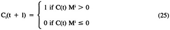

by Abraham Kandel
CRC Press, CRC Press LLC
ISBN: 084934297x Pub Date: 11/01/91
|
|
Fuzzy Expert Systems
by Abraham Kandel CRC Press, CRC Press LLC ISBN: 084934297x Pub Date: 11/01/91 |
| Previous | Table of Contents | Next |
A FCM m-by-m connection matrix F is a FAM. Its complexity is ultimately bounded by m2. The ith row of F, Fi, lists the excitatory and inhibitory causal connections from Ci to the other causal concepts Cj. The ith column, Fi, lists the causal connections directed to Ci. We assume no concept causes itself; so F is zero-diagonal. Here we shall assume the simple binary-state model as used in the BAM which, nevertheless, is a useful practical tool and complex theoretical structure. We assume concepts are either on (1) or off (0), knowing that we can generalize this with a differential model. FCM weights Fij = e(Ci,Cj) are causally excitatory or inhibitory weights in the fuzzy causal interval [-1,1], knowing that disconcepts can be used to maintain unit-interval causality. An event or state of the FCM is the bit (fit) vector of causal concept activations c(t) = (C1(t), . . ., Cm(t)) ∈ Bm at time t in the dynamic process. We assume the causal concepts in C are synchronously updated knowing that, as in the BAM case, asynchronous update schedules (causal time constants) can be used as well. The input to C(t + 1) is some nonlinear function n of the input-sum vector C(t) M that keeps C(t + 1) binary. We assume the simplest nonconstant function n, the threshold-linear function. Then:

Equation 25 differs from the BAM threshold-linear law, as seen in Equation 12, when the causal input sum equals the threshold (here the default threshold 0). In Equation 12 the neuron maintains its current state, either on or off, when this occurs. In Equation 25 we encode the causal intuition that something happens if, and only if, something makes it happen. Put another way, we assume passive decay of causal activation.
A FCM inference is a resonant state or pattern. The FCM is turned on by an initial or continuous input pattern that quickly evolves to some steady resonant state of FCM activity. FCMs only make predictions or forward-chaining inferences because of the underlying nonlinear (irreversible) dynamics of the state-transition model. A resonant state is a limit cycle, sequence of states, or a fixed point (one-step limit cycle). The causal interpretation of a resonant limit cycle is a predicted sequence of events, or spatiotemporal pattern. Some complex differential FCMs with time-varying edge functions can, in principle, resonate on chaotic attractors.
Binary FCMs governed by Equation 25 always converge to a stable limit cycle in no more than 2m synchronous update iterations. The first state of the resonant limit cycle is the first state that is causally recalled twice. Energy minimization arguments37 can also be used to show rapid convergence to stable limit cycles. If 1i is the length of the ith limit cycle and there are r distinct limit cycles, then 11 + . . . + 1r ≤ 2m since a distinct binary state can occur in, at most, one limit cycle and need not occur in any. If Ar is the arithmetic-mean length of distinct limit cycles, then r ≤ 2m/Ar holds with strict inequality in most cases. In general there are few limit cycles relative to the total number 2m of possible input states.
FCM resonant states can be interpreted as hidden patterns in the F connections that summarize an expert’s or experts’ knowledge. Experts tend to map all possible what-if questions (2m binary states) into relatively few responses. We identify these characteristic responses with FCM limit cycles; so, once again, r/2m tends to be very small. The limit-cycle patterns are hidden in the FCM connection topology. As shown by Equation 25, different fuzzy weights with the same sign can produce different hidden patterns. Yet also by Equation 25, FCMs tend to be robust when edges are perturbed. This follows since typically in large FCM matrices only large changes can change the sign of the input sum, and even then only one or two bit values may change and the trajectory may still converge to the original limit cycle or some modification of it.
Suppose we have somehow combined the knowledge of several experts in the FCM F. We can intuitively interpret a resident hidden pattern in F as the consensus eventually reached by a round-table discussion among the experts. A topic or question (causal state description) is proposed; then fairly soon a rough agreement or fixed pattern of responses is reached — no matter how many experts or how rich the causal environment. In rare cases a unanimous opinion is reached, which corresponds to quick convergence to a fixed point. In general, the stable responses will be some causal sequence or set of conditions (“Yes, but only if this and that . . .”), which corresponds to a limit cycle, or a clear-cut two-sided disagreement, which corresponds to a two-step limit cycle or BAM fixed point. The evolved pattern of responses will typically differ from the complete position of each expert. Indeed, even in casual conversation, like questions tend to map into like response configurations, and perturbations of the causal environment or problem domain usually do not affect the evolved outcome.
We now summarize the FCM knowledge combination scheme in Kosko.40 A more general, but somewhat less practical, scheme for combining arbitrary partially ordered quantities can be found in Kosko.38 The present scheme combines arbitrary FCMs from arbitrarily many knowledge sources with arbitrary credibility weights wi in [0,1]. Accordingly, unlike traditional AI knowledge engineering, where there is only one or two domain experts, here there can be as many experts as pleased, with as diverse knowledge as pleased, and with different levels (degrees) of expertise. The author has used this technique to systematically combine over 30 experimental sociopolitical FCMs in a matter of minutes.
| Previous | Table of Contents | Next |